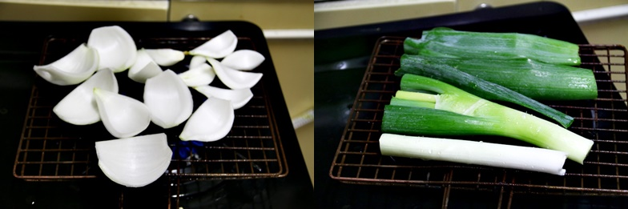
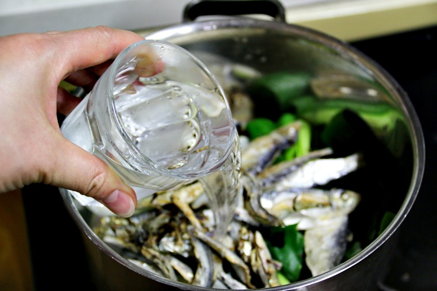
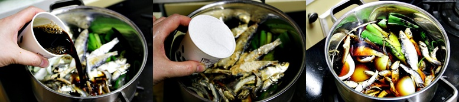
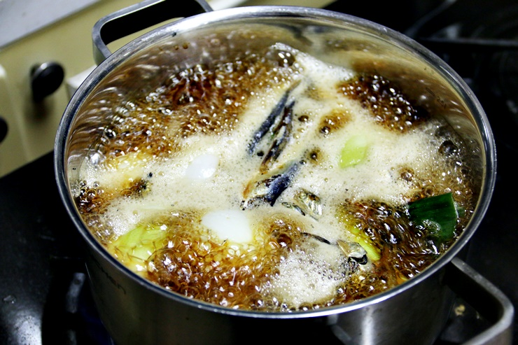
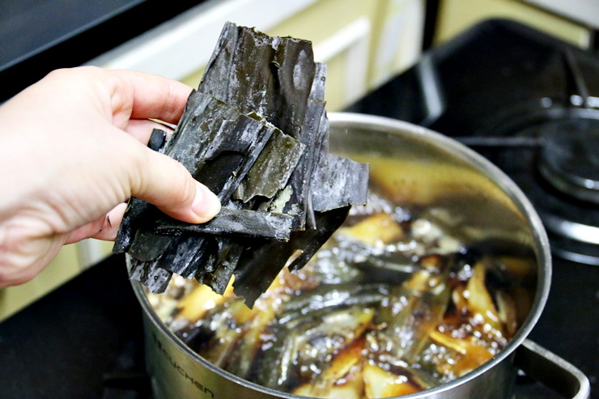
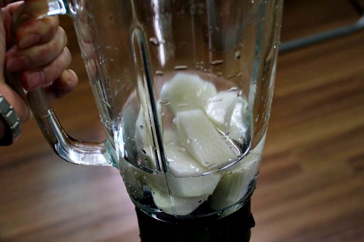
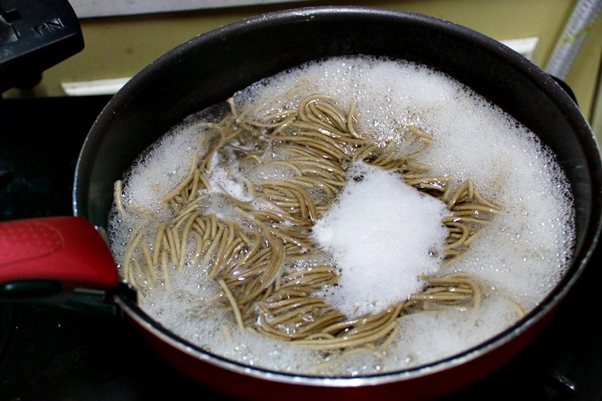
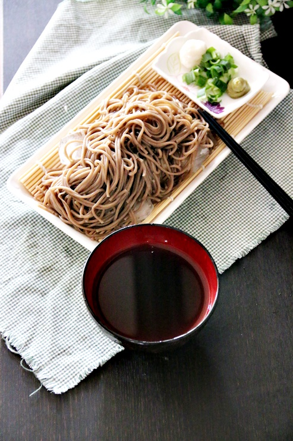
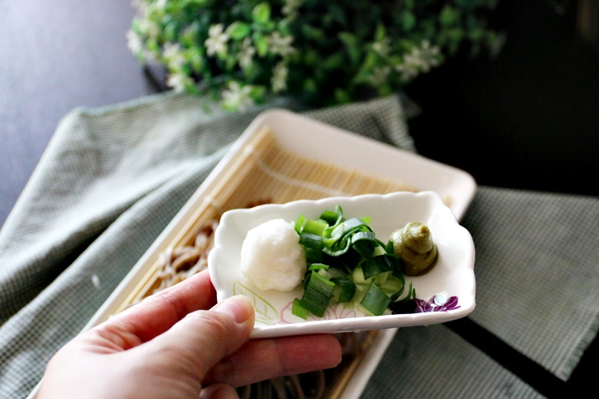
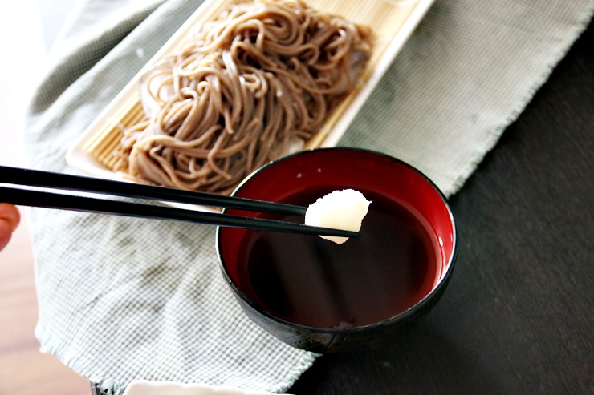

냉모밀
여름 메뉴로 콩국수, 냉면, 오이냉국은 하루걸러 한 번씩 먹는 거 같아요 그래도 시원하고 맛있어서 질리지 않는 메뉴네요 오늘은 시원한 냉모밀 만들기에요, 백선생 국수장국 만드는 법으로 초간단 냉메밀국수 만들었는데 간단하면서 맛도 좋더라고요
조리시간 : 60분 이내
재료
대파 1대
양파 1개
디포리 10개
멸치 1주먹
간장 2컵
설탕 1컵
물 5컵
맛술 1/2컵
생강 1작은술
다시마 5장
가쓰오부시 1주먹
메밀국수 80g
무 1/6토막
쪽파 조금
고추냉이 조금
물 조금
조리 순서
| 1. 백선생 국수장국 : 양파와 대파는 석쇠 위에 올려 고루 구워요. |  |
| 2. 냄비에 구운 양파, 구운 대파, 디포리와 멸치 1 주먹 물 5 컵을 넣어 줍니다. |  |
| 3. 간장 2 컵, 설탕 1 컵, 맛술 1/2 컵도 넣어 봅니다. |  |
| 4. 센 불에서 끓여 끓어오르면 약불로 줄여 40 분간 졸여 줍니다. |  |
| 5. 40 분 끓여 준 후 다시마를 넣고 10 분간 끓여주고 가쓰오부시 1 주먹을 넣고 고루 저어준 후 불을 끄면 냉모밀, 냉메밀국수 만들어 먹을 수 있는 백선생 국수장국 완성이에요. |  |
| 6. 냉모밀, 냉메밀국수 : 이제 냉모밀, 냉메밀국수를 만들어 볼게요 무는 잘게 썰어 물과 함께 믹서기에 넣고 갈아 거즈에 올려 물기를 짜줍니다. |  |
| 7. 메밀국수는 끓는 물에 6 ~ 7 분간 삶아 찬물에 서너 번 헹궈 물기를 빼줍니다. |  |
| 8. 국수장국 1 : 물 2 비율로 국수장국을 만들고 쪽파나 대파를 잘게 썰고 고추냉이, 무를 준비해줍니다 메밀국수는 얼음 위에 올려 차게 해줍니다. |  |
| 9. 무와 고추냉이, 파를 잘게 썰었어요 김가루도 넣어 먹으면 맛있던데..~. |  |
| 10. 차가운 국수장국에 물을 섞어 무즙, 쪽파, 고추냉이를 취향에 맞게 넣고 고루 섞어 줍니다. |  |